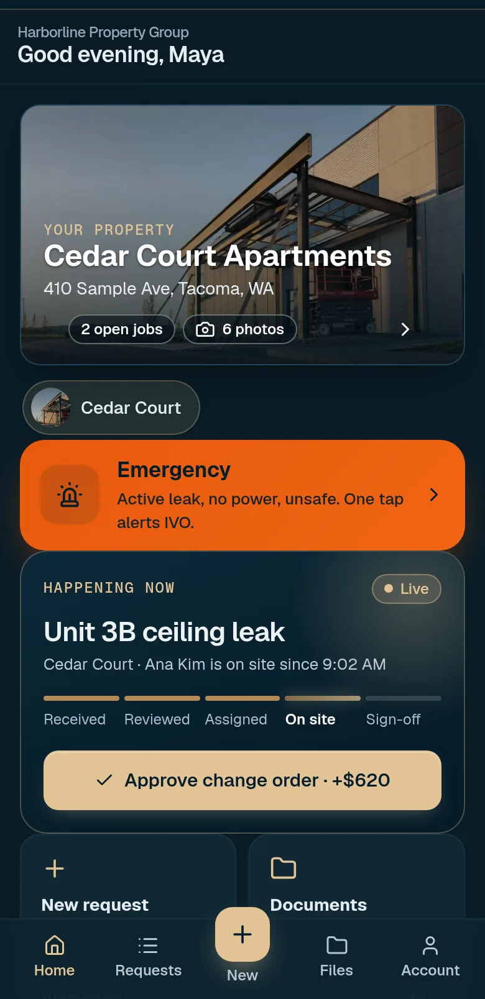
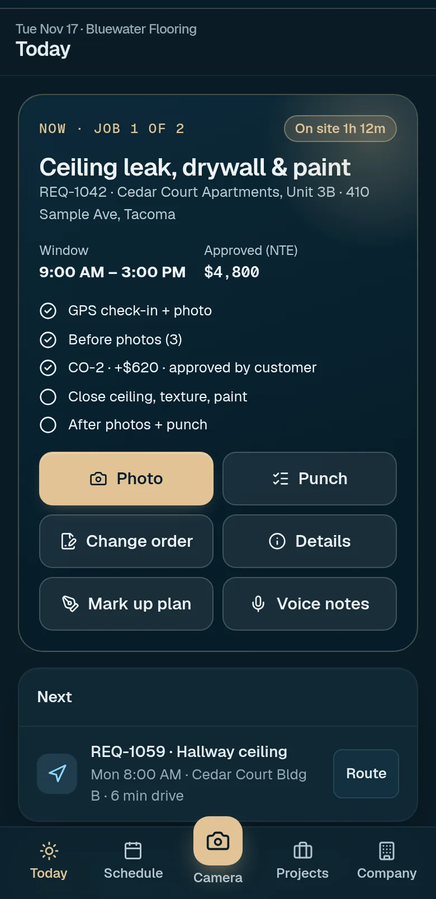
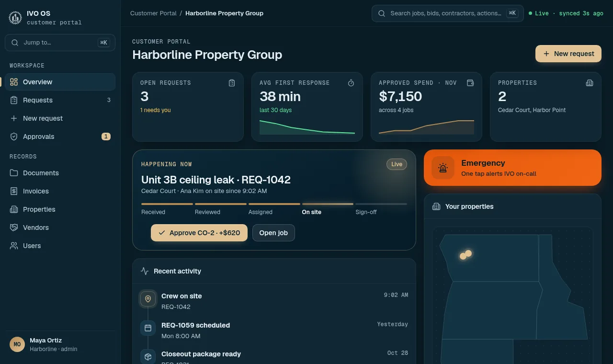

Customer app
Live status, photos and files, budget and approvals, and a conversation that stays attached to the job. Each team member gets an individual invited login.
A sample of the IVO workspace, shown with sample data. It follows a request as it is scoped, assigned to a technician, updated in the field, and closed out with photos and a written record.
Portal access is by invitation. After IVO reviews your request, the authorized contact is invited to your own project workspace. These screens use sample data to show how the workspace works.

Live status, photos and files, budget and approvals, and a conversation that stays attached to the job. Each team member gets an individual invited login.

Defined scopes with files attached, check-in on site, photo updates, change orders and closeout items, with one IVO contact for the customer.

A portfolio view of every property and every open item for your whole team, with the same status, approvals and records as the customer app.
The screens above are sample screens of the IVO workspace. A request still starts on this site, and portal access is by invitation.
Know where to submit, communicate, review documents and track the next step. Click through each step to see what happens, what you do and what stays private.
Submit a public customer or partner request first. IVO reviews it and invites the authorized contact by email. Only that invited email can register after one-time verification. Each account has one approved relationship; the IVO team uses a separate login.
Follow your private application checklist: application details, business setup, required paperwork and assigned signatures. Submit the complete package for IVO review. Jobs, bids and operational pages remain locked until the team approves your relationship.
Open Projects for scope, schedule, questions, change requests, shared documents and closeout. Internal team records stay restricted. A logged change request is not an approved change order.
The notification center collects messages, bids, shared documents and relevant reminders. Open My Account to check your signed-in identity. Each person must use an individual account.
Once your relationship is approved, each project gets a shared workspace for the customer, participating providers and IVO.

Different records need different access. A shared scope photo serves a different purpose than a contractor’s tax form.
Every person signs in with their own invited email. No shared logins, and the IVO team uses a separate login.
Tax forms, remittance details and other sensitive paperwork go through secure onboarding, separate from project files.
Scope, schedule, questions, documents and closeout are visible to the people working on that project. Internal team records stay restricted.
Still have a question? Call (206) 539-9549 or email office@ivoservgroup.com.
Submit a customer request or a partner application first. IVO reviews it and invites the authorized contact by email. Only that invited email can register, after one-time verification.
No. Each person must use an individual account. That keeps the record of who said and approved what accurate.
No. A logged change request is not an approved change order. The appropriate decision on scope, cost and timing has to be documented first.
Use secure onboarding for requested tax forms, remittance details and similar paperwork, not shared project files.
Tell us what the property needs. We’ll help identify the appropriate next step.